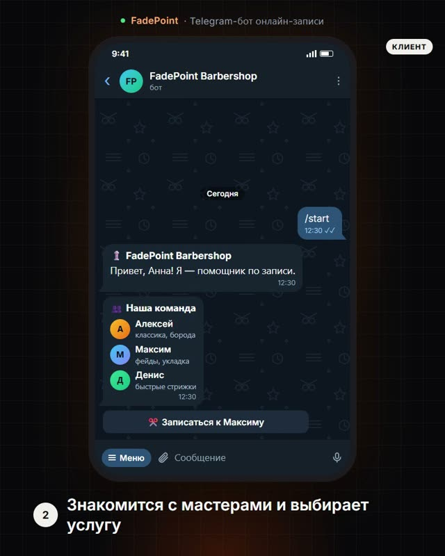

01
Разбор
Смотрю, где вы теряете клиентов, и предлагаю решение. Срок и цена письменно.
Сайты, чат-боты и автоматизация для экспертов: психологов, врачей, тренеров и преподавателей.
Смотрю, где вы теряете клиентов, и предлагаю решение. Срок и цена письменно.
Показываю, как всё будет выглядеть. Правим, пока не понравится, и только потом код.
Запускаю, передаю доступы и инструкцию. Заявки сразу приходят вам в Telegram.

Чат-ботБот FadePoint СайтСайт стоматологии «Авиценна»
СайтСайт стоматологии «Авиценна»
Листайте колесо мышкой, пальцем или стрелками. Нажмите на работу, чтобы открыть кейс.
DevOps Engineer · Frontend Developer
Устранять причину проблемы, а не маскировать её
Чтобы заявок стало больше, задача решилась в кратчайшие сроки, а ваши посетители уходили в восторге
Никаких правок ради правок — только польза, которую видно
Часто сайту не нужен новый дизайн. Клиентов теряют из-за незаметных мелочей: запутанной навигации, медленной загрузки, формы, до которой никто не доходит. Я разбираю продукт, нахожу такие места и исправляю их — чтобы заявок и посетителей стало заметно больше.
Прохожу путь клиента от первого экрана до заявки — с телефона и с компьютера.
На выходе — короткий список проблем по важности: что исправить в первую очередь.
Не перекрашиваю кнопки наугад, а устраняю то, что нашёл при проверке.
Каждое изменение объясняю простыми словами: что было, что стало и зачем.
Снимаю с вас повторяющиеся задачи — вы тратите время на клиентов, а не на переписку.
Пример — мой бот FadePoint ↓Стопроцентных гарантий не даёт никто — и я не буду обещать того, чего нет. Зато расскажу, почему мне важно вас не подвести, и что я обещаю каждому клиенту.
Я только начинаю, и каждый проект — это отзыв, который увидят следующие клиенты. Мне важнее, чтобы вы остались довольны, вернулись и посоветовали меня знакомым.
Для меня каждый проект — способ разобраться в новом: в технологиях, в вашем бизнесе, в людях. Чем лучше получится ваш сайт или бот, тем больше вырасту я сам. Делать «лишь бы сдать» мне просто неинтересно.
Каждому клиенту — без мелкого шрифта.
Обманом можно заработать один раз. Честной работой — всегда. Хочу делать проекты, за которые не стыдно, — и чтобы ко мне возвращались.
Я только начинаю и не выдумываю отзывы. Станьте одним из первых: первые проекты делаю дешевле в обмен на честный отзыв — какой бы он ни был.
Отзывы оставляют только мои клиенты — по личной ссылке после сдачи проекта. Текст не правлю. Публикую и похвалу, и критику. Не публикую только оскорбления, чужие личные данные и рекламу.
Пять понятных шагов. На каждом вы видите результат и решаете, идём ли дальше, а в конце получаете всё на своё имя.
Пишете в Telegram или оставляете заявку на сайте. Отвечаю и договариваемся о коротком созвоне или переписке.
в тот же деньЗадаю пару вопросов, разбираюсь в задаче и предлагаю решение. Что, срок и цена — письменно, до старта.
1–2 дняПоказываю, как всё будет выглядеть. Правим, пока вам не понравится, — только потом берусь за код.
этап 1 оплатыСобираю по частям и даю тестовую ссылку: вы видите живой сайт или бота ещё до запуска.
этап 2 оплатыЗапускаем, передаю вам все доступы и инструкцию. Месяц бесплатно исправляю свои ошибки.
месяц поддержкиДомен, код и бот оформлены на вас, пароли знаете только вы. Захотите — продолжим вместе, захотите — передадите другому разработчику. Вы ни от кого не зависите.
Зависит от задачи. После короткого разговора называю цену письменно — до начала работы, и она не меняется по ходу. Первые проекты делаю дешевле в обмен на честный отзыв.
Точный срок называю до старта и фиксирую в переписке. Карточки и презентации — обычно дни, лендинг или бот — недели. На каждом этапе вы видите, что уже готово.
Рассказать о бизнесе и о том, что хочется изменить. Тексты и фото — если есть; если нет, помогу подобрать. Дальше — смотреть результат на каждом шаге и говорить, что нравится, а что нет.
Сначала согласуем макет — до того, как я начну код. Правим, пока не понравится. Оплата по этапам: вы платите только за то, что уже увидели и приняли.
Вам. Домен, код и бот оформляются на вас, пароли знаете только вы. Отдаю инструкцию и подписываем акт приёма-передачи.
Да. Могу подключить простую панель для текстов, цен и фото — или вносить изменения сам по договорённости. Месяц после сдачи исправляю свои ошибки бесплатно.
Да, по всей России. Всё обсуждаем в Telegram, созваниваемся — по желанию.
Расскажите, что есть сейчас и что хочется улучшить, — предложу решение и честно скажу, сколько это займёт.
Написать в Telegram Telegram-канал CHESHКейсы, «было → стало» и сказки про бизнесПодписатьсяСкоро напишу вам:
ваш бизнес больше не прячется 🥷Ничего страшного: нажмите кнопку — откроется Telegram с уже готовым текстом заявки, останется нажать «Отправить».
Отправить через Telegram